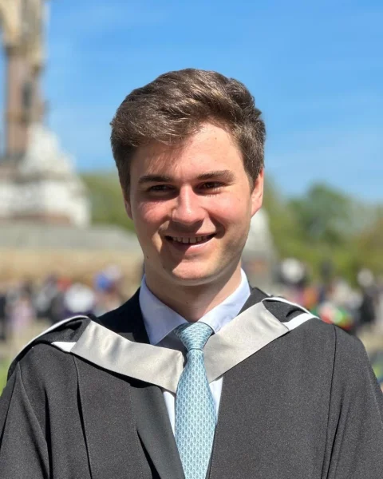
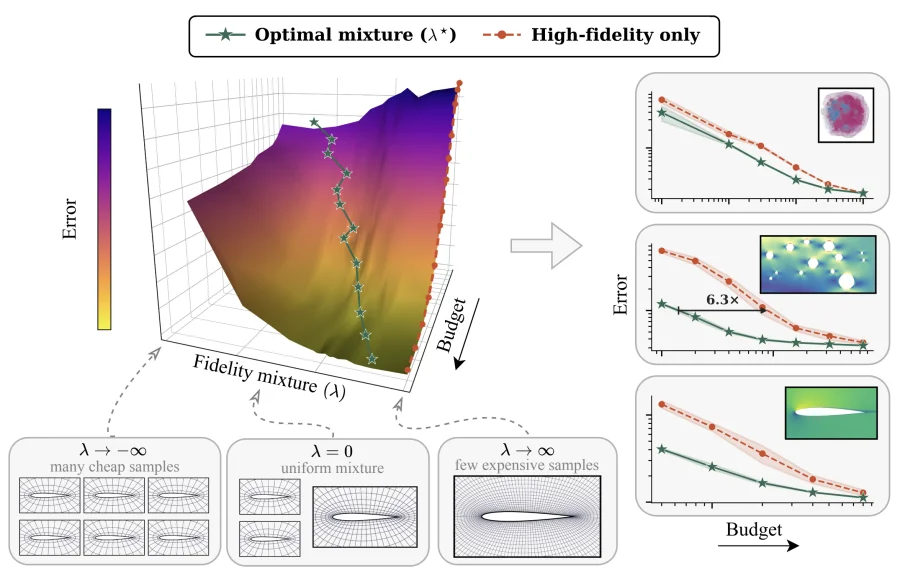
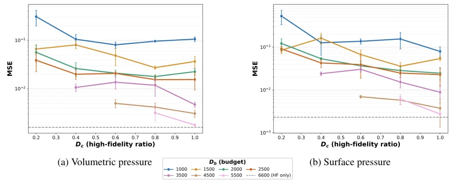
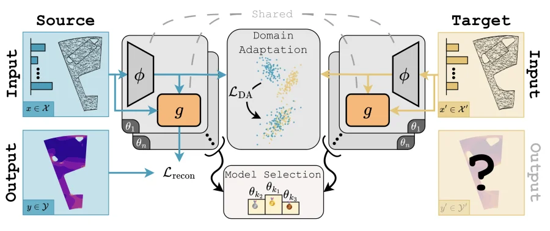
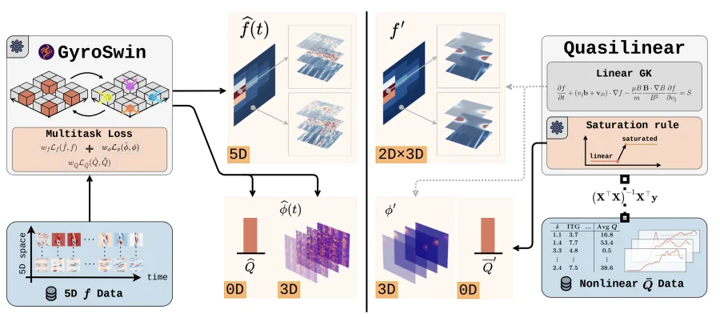

Paul Setinek
Hi, I am Paul! I am a PhD student working on data-driven neural surrogates for large-scale physical simulations, supervised by Johannes Brandstetter at Johannes Kepler University (JKU) in Linz. Currently, I am visiting Steven Brunton at the University of Washington in Seattle.
Before my PhD, I received a bachelor's degree in mechanical engineering from TU Vienna and a master's degree in Applied Computational Science and Engineering from Imperial College London. In my master's thesis, I worked on implicit neural scene representations for underwater maintenance with Aker BP and Imperial College. I also worked on computer vision for automated quality control in manufacturing, using light microscopy, at the Zeiss Solutions Lab in Munich.
Research
Together with the Linz Center of Mechatronics, I worked on distribution shifts and the robustness of neural surrogates in real-world manufacturing simulations. This made me realize the importance of data in SciML on one side, and the cost of generating high-fidelity data on the other. Lately, I have therefore been working on training neural surrogates with multi-fidelity data, enabling compute-efficient scaling of these methods.
Selected publications
-

Compute-optimal data scaling for neural surrogates via multi-fidelity training
-

Towards Multi-Fidelity Scaling Laws of Neural Surrogates in CFD
-

SIMSHIFT: A Benchmark for Adapting Neural Surrogates to Distribution Shifts
-

GyroSwin: 5D Surrogates for Gyrokinetic Plasma Turbulence Simulations